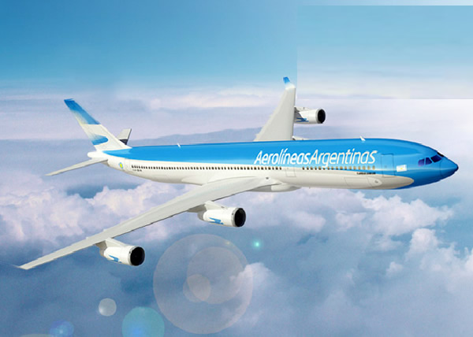
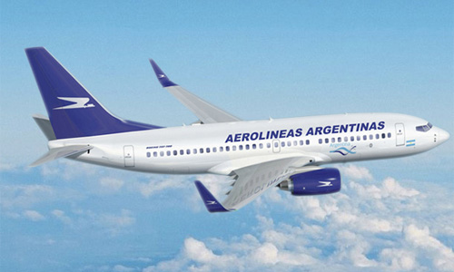
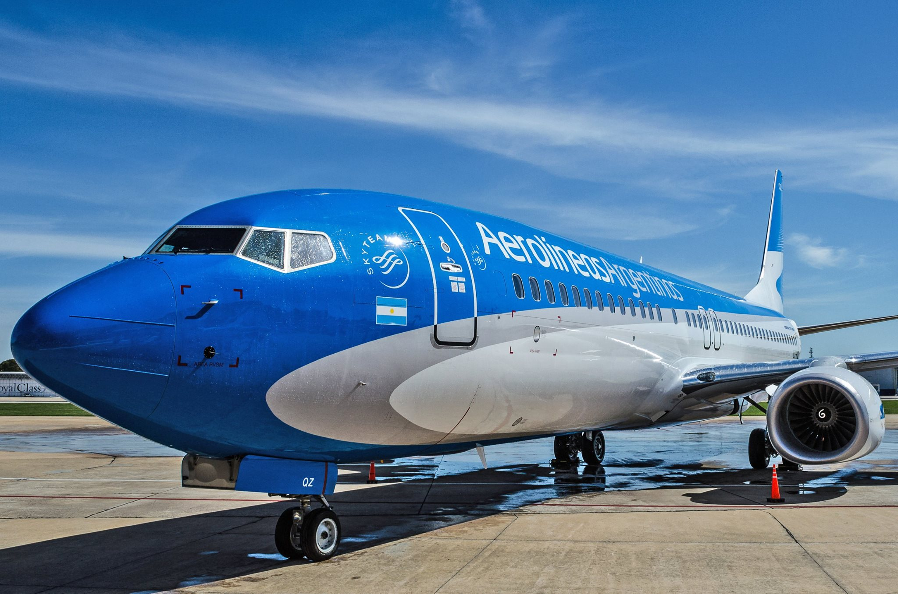

Aerolineas Argentinas dejara de volar a Cuba
Por: Gerardo González ggonzalez@infobae.com
Varios motivos influyeron en la decisión, entre ellos, no tener aviones adecuados para esa ruta. El último vuelo será el 31 de julio. ¿Qué pasará con los turistas que tenían tickets posteriores a esa fecha?
Sorpresa. Esa fue la reacción que tuvo Claudio cuando le avisaron por teléfono –desde la agencia de turismo– que le iban a devolver la plata que había pagado por el pasaje a Cuba, debido a que la empresa Aerolíneas Argentinas ya no cubría esa ruta en la fecha que tenía previsto realizar su viaje.
Argentina supo ser el principal mercado emisor de turistas desde el Cono Sur. Por tal razón, en enero de 2015, cuando la compañía estaba comandada por el camporista Mariano Recalde, se decidió incluir a La Habana entre los destinos internacionales que cubría Aerolíneas Argentinas.


